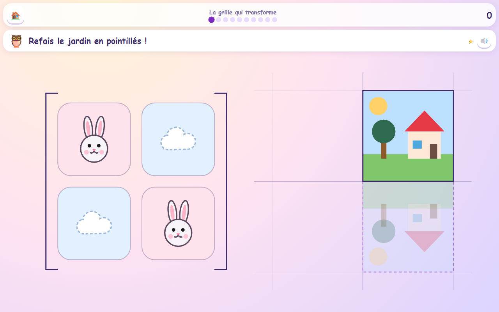

Strange Mind
Des défis de quelques secondes pour sentir les rotations, les nombres complexes et les matrices, dès 5 ans, sans une seule formule.

⚡
Les défis éclair
9 mini-jeux de quelques secondes, « faire » et « prévoir » : le dauphin qui tourne, la machine à tourner, la grille qui transforme, les miroirs… Séries, niveaux, médailles, Rush et défi du jour.
🔢
La grille qui transforme
Régler une grille 2×2 pour refaire le jardin : une matrice, c'est une transformation.
Les autres versions (leçons guidées, cubes qui roulent, tourbillons, chasse aux relations) sont des prototypes : fxpar.github.io/kid-games.